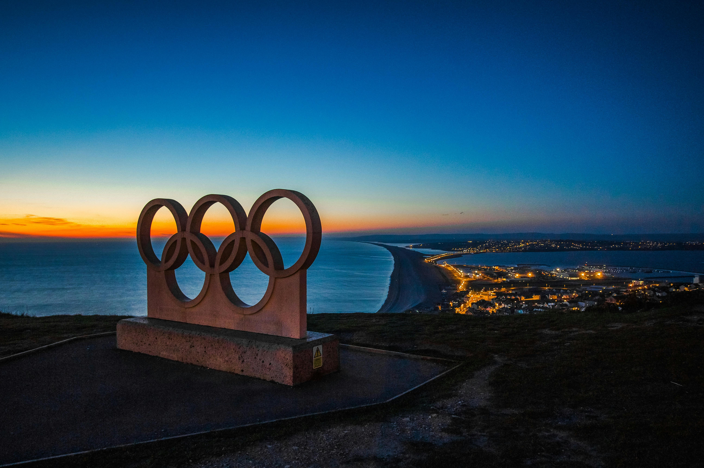

About This Vero Volley Monza Website!
Welcome to the Vero Volley Monza fan run website! This website is dedicated to the SuperLega men's volleyball team, Vero Volley Monza, formerly known as Volley Milano. We are a passionate fanbase for the Milan area's largest volleyball club, Vero Volley Monza. We created this website for fans of Vero Volley Monza to have an online platform to come together in support. Here, you will find Vero Volley Monza's history with historical league finishes, overviews from our biggest rivals nationally and internationally, a short biography of our most prominent international players to help familiarize local fans with these newcomers, and the current status of all our standings in competitions. Enjoy Vero Volley Monza!
History of the Volleyball Club
Origins of Vero Volley Monza
The history of Vero Volley Monza, like many European volleyball teams, is convoluted and could easily be compared to the life cycle of a phoenix: living when they have sponsorship money, dying when that money dries up, and a rebirth when a new sponsor injects needed cashflow. The club's origin can be traced back to 1973 under Volley Gonzaga after multiple clubs merged, notably Gonzaga (then the current youth champions) and CSI Milano, a blue-blooded former Italian champion. The club officially debuted in the top division in the 1976-77 season and achieved moderate success in the 1980s, notably crowned the CEV Cup champions in 1987.
Fininvest Group Invests in the Milan Club
The following season, Volley Gonzaga finished at the bottom of the standings. Fortunate to be playing in Milan at the time the football club AC Milan was at the peak of its power, the investment group Fininvest bought the team with the idea of creating a multi-sport club competing on multiple fronts, including volleyball, soccer, basketball, baseball, and rugby. The project was ultimately a failure, with only two 2nd place finishes coming in the 1992 and 1993 seasons, a CEV Winner's Cup and two runner-up medals, and two FIVB Volleyball Men's Club World Championship trophies in 1990 and 1992 to show for the investment made by Fininvest Group. The return on investment was not enough for Fininvest Group to continue the endeavour, and in 1995, they decided to pull out of their experiment, leaving Vero Volley Monza stranded.
Modern Era of the Italian Club
The club immediately faced financial difficulties, sold its rights to MTA Padua, and was demoted to Serie B2. In 1999, the club separated from Volley Gonzaga and was renamed Volley Milano (officially renamed to Vero Volley Monza in 2008). The refurbished club gained promotion back to the top division in Italian men's volleyball in the 2000-01 season. Once again, due to financial constrictions, the team was forced to merge with Volley Piacenza until 2008. In 2008, Vero Volley Monza was formed, breaking away from Volley Piacenza.
Today, Vero Volley Monza is alive and well, with the team in 6th place as of January 10, 2024.
Rival Volleyball Teams of Vero Volley Monza
Revivre Milano
The crosstown rivals, Vero Volley Monza have battled Revivre Milano since the latter club was formed in the 2014-15 season. They have gone head-to-head in the SuperLega and the Coppa Italia, with spectacular fireworks in nearly every match. Revivre Milano beat Vero Volley Monza 3-0 on the road this season, with the rematch having Vero Volley Monza traveling to Rivivre Milano's stadium on February 14.
Lube Civitanova Volleyball Club
Another northern Italian rival, Lube Civitanova, is one of the four powerhouse teams in the SuperLega and often beats Vero Volley Monza out for the top spots in the league. Vero Volley Monza wants these key placements for both prize money and access to elite international competitions. Vero Volley Monza scored a surprising 3-0 victory away from home against Lube this season but Vero Volley Monza was knocked out of the Coppa Italia against them at the end of 2023.
Trentino Volley
Founded in 2000, Trentino Volley is another fierce northern rival of Vero Volley Monza. Another powerhouse of Italian volleyball, Vero Volley Monza has struggled for dominance in the region against one of the best men's volleyball clubs in Europe. However, rumours of internal turmoil surround the club, with multiple top athletes refusing to sign for the club in recent years. Despite this, Trentino is currently at the top of the SuperLega standings (5 ahead of Vero Volley Monza) as of January 14, 2024.
Modena Volley
One of the most historically stable teams in all of European volleyball, Modena Volley was founded in 1966 and has been a constant pillar in the top Italian division since 1968. Vero Volley Monza has struggled mightily against Modena Volley throughout history, and for good reason. It is the most successful club in Italy, having won the league title 12 times, the Coppa Italia 12 times, and the Champions League 4 times.
Post-Covid, the club has steadily declined and is no longer the face of Italian volleyball. They sit 8th (below Vero Volley Monza) in the league as of January 14, 2024. Watch for Vero Volley Monza to try to replace Modena as an icon of the men's game.
Current Team Roster of Vero Volley Monza
Vero Volley Monza has a roster of 15 athletes, with 7 coming from foreign countries. There is an international athlete limit in the SuperLega, only allowing 4 international volleyball players to be on the floor simultaneously. Below are the 2023-24 international athletes with the most game time rostered at Vero Volley Monza as of January 14, 2024.

Stephen Maar
Stephan Maar (born 1994) is a Canadian volleyball player who has also played for the Canadian Men's National Volleyball Team and joined Vero Volley Monza this season. Hailing from Ontario, Stephen played four years at McMaster University in their men's volleyball program, winning multiple OUA Championships. He has played his entire pro career in Italy and will look to add to his trophy cabinet with Vero Volley Monza in 2024!
Eric Leoppky
Eric Leoppky (born 1998) is another Canadian playing for Vero Volley Monza this season. Hailing from Manitoba, Eric played four years on Trinity Western University's men's volleyball team, winning 2 USPORT championships before leaving the university for Italy in 2021, only joining Vero Volley Monza this year. Like Maar, he has played his entire volleyball career in Italy and will look for further success this year, propelling Vero Volley Monza to new heights.
Fernando Kreling
Fernando Kreling is a Brazilian setter signed to Vero Volley Monza. His career began with the biggest volleyball club in his home country, Sada Cruzeiro Volley, in the 2015-16 season. Kreling won every major honour someone playing professional volleyball in Brazil could win before departing his boyhood volleyball club. He came to Milan when he joined Vero Volley Monza at the beginning of the 2022-23 season. The volleyball star is unique as being one of the shortest players at the highest level, standing at 6'1". Look to see this dynamic athlete set his teammates up for success in Milan for Vero Volley Monza!
Ran Takahashi
Ran Takahashi (born 2001) is the youngest of the four internationals listed here but is one of the top prospects in the entire world of volleyball. Starting his career in Japan at the Nippon Sport Science University, Ran quickly began his pro career soon after, playing in Italy for the past two seasons, joining Vero Volley Monza at the start of the current season. Look for this high-flying attacker playing against giants for Vero Volley Monza!
Nik Mujanovic
Nik Mujanovic is an Opposite attacker on Vero Volley Mona. Originating from Slovenia and standing at a massive 6'8", the volleyball star began playing volleyball for a local club named Calcit Kamnik before a controversial move to Vero Volley Monza in 2023. The move shook the volleyball world, as Mujanovic terminated his contract with Caclit in a unilateral decision to come to the Milan club. Calcit took the volleyball star to court, but he ultimately was able to join Vero Volley Monza in time for their games beginning in December. Watch this volleyball star block out the opposition for Vero Volley Monza!
Arthur Szwarc
Arthur Szwarc (born 1995) is the third and final Canadian volleyball player on Vero Volley Monza. Also from Ontario, he only played two seasons at York University before starting his pro career. Szwarc has previously played in France before playing with Vero Volley Monza for the past two seasons. Look for the 6'10" athlete to be a force for Vero Volley Monza this year!
Current Vero Volley Monza Competitions
SuperLega
The SuperLega is the top division in professional Italian men's volleyball and is generally accepted as the second-best division for pro leauges in Europe. Currently, Vero Volley Monza sits sixth in the table. The top four teams that finish in the SuperLega are granted bigger prize money and are automatically invited to play in international competitions.
Coppa Italia
The Coppa Italia is the domestic club trophy in Italy. This trophy can be won by any of the professional volleyball teams playing in Italy, regardless of their division. Vero Volley Monza are currently in the semi-finals, facing off against Trentino Volley. Watch Vero Volley Monza raise the domestic cup this year as they go on an underdog run!
CEV Challenge Cup
The CEV Challenge Cup is the third tier of international men's volleyball club competition.Having placed fifth in last year's SuperLega, Vero Volley Monza is eligible to compete in this year's version. Like many cup competitions, the CEV Challenge Cup is a knockout competition. Vero Volley Monza is looking to be crowned champion of the Challenge Cup, as they are in the semi-finals this year!
Head Coach
Massimo Eccheli
Massimo Eccheli is Vero Volley Monza's head coach. The Italian was born in 1966 and played professionally in Italy. He signed to be the head coach of Vero Volley Monza in 2021, the first professional volleyball season in Italy post-COVID. The star coach has overseen countless athletes' success throughout the years, including Georg Grozer and Maxwell Holt - at one point considered the best opposite and middle blocker in the world, respectively.
The Italian at the helm of Milan's biggest volleyball club has enjoyed success, with Vero Volley Monza capturing its first-ever European trophy, the CEV Cup, in the 2021-22 season. He followed that up by making it to the CEV Challenge Cup this year. Massimo Eccheli will be looking for more silverware with the volleyball club in the future!
What's New and Exciting!
Congratulations to Canadians Stephen Maar, Arthur Szwarcs, and Eric Leoppky for reaching the finals for the first time in Vero Volley Monza's History!
The Final of the SuperLega will be played on April 18, 2024!

Catch nearly all of Vero Volley Monza's stars at this year's Summer Olympics - Paris 2024!
VolleyballWorld Praises Monza's Cinderella Run to Italian SuperLega Finals
In an exhilarating match versus Trentino Volley, Mint Vero Volley Monza secured their first-ever qualification for the Italian SuperLega championship final, defeating the favourites. It was a nail-biting five-setter concluded with a high-stakes fifth set tiebreaker, which was earned on match point by Japanese outside hitter Ran Takahashi. Vero Volley Monza dominated early, taking a decisive 2-0 lead after the opening two sets, but the hosts Trentino Volley fought back, tying the match at 2-2 and forcing the decisive fifth set. Ultimately, Vero Volley Monza triumphed in the fifth 17-15, with Takahashi earning the Most Valuable Player award for his 19 points, with 4 of them coming in the fifth set. Canadian national team stars Stephen Maar and Eric Loeppky led the team in scoring with both players earning 23 apiece. Trentino's top scorer was Kamil Rychlicki, who delivered a staggering 31 points on the night.
Vero Volley Monza's head coach, Massimo Eccheli praised his team's resilience, saying, “It was truly a beautiful journey, which began in October, when we quickly realized that we had the chance to have a great season. Maybe we didn't imagine we'd get this far, but we were aware that we had the tools to compete against everyone” (VolleyballWorld, 2024). Meanwhile, Trentino's coach, Fabio Soli, acknowledged Monza's formidable performance. In an interview, he stated “We absolutely must congratulate Monza. They played a very intense series, working to the limit of perfection between blocking and defence, fundamentals that put us in particular difficulty.” (VolleyballWorld, 2024).
Vero Volley Monza now advances to the SuperLega final to face reigning champions Sir Safety Conad Perugia. Vero Volley Monza's opposition includes formidable international stars, such as Simone Giannelli (Italy), Kamil Semeniuk (Poland), and Sebastián Solé (Argentina). The finals for the Italian SuperLega will take place on April 18, 2024.
For more information, click here for a direct link to the article!